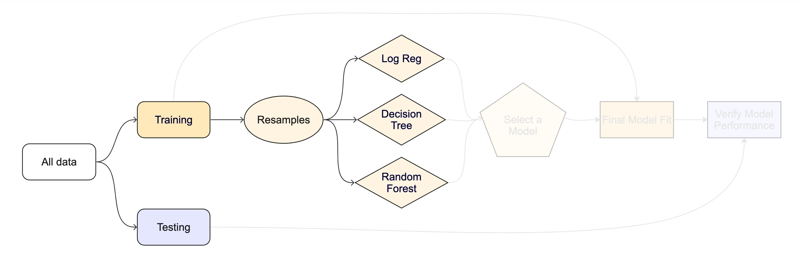

Lab 8: Machine Learning
The Whole Game Plan
The Whole Game Plan
In Unit 3, we have learned a lot about the Machine Learning process. We have learned about feature engineering, resampling, the different types of machine learning goals, the different types of models (and R engines), and how to evaluate the performance and tune a final model.
We have also learned about the importance of data splitting and how to use the tidymodels package to create a machine learning pipeline.
In this lab, we will put all of this knowledge together to create a complete machine learning pipeline for a regression problem.
Lab Set Up
- Open your existing lab 6 project
- Create a new Quarto document called
hyperparameter-tuning.qmdin the project folder (next to your lab6.qmd). - Start with the lab!
Libraries
Lets return to the CAMELS dataset we have been working with in Lab 6. We will use this dataset to predict the q_mean variable using the other variables in the dataset.
Data Import/Tidy/Transform

Your first job is to read in the data and clean it. This is the first step in any data science process in order to prepare the data for modeling and or analysis.
Data Spliting

Now that you have your data cleaned and in a good form, you are ready to split the data into a training and testing set.
Feature Engineering
Not all data - even cleaned data - is primed for model input. In this class we have looked at recipes as a way of defining a preprocessor for our modeling efforts. Recipes are a way of defining a set of steps to be applied to the data anytime it is used. They require a formula and incremental steps to transform a dataset.
Resampling and Model Testing

Your training data is now ready to be used for model training and you have a preprocessor that you can iterate over.
1. Build resamples
2. Build 3 Candidate Models
You will also define a set of models to test. A model is defined by a specification, an engine, and a mode. The specification defines the type of model and the engine defines the implementation of the model. In class we learned about a few classes of models including
- Linear models
- Logistic regression
- Decision trees
- Random forests
- Boosted trees
- Support vector machines
- Neural networks3. Test the models

With your defined set of models, k-folds samples, and recipe you are ready to test the models.
4. Model Selection
Model Tuning
OK! Now you have selected a base model to use. Now we are interested in tuning it to extract the maximum performance that we can from it. Remember that all models have hyderparameters that are used to refine the underlying algorithm (specification)

1. Build a model for your chosen specification.
Be sure to set the mode and engine as you did above but this time specify at least 2 hyperparameters to tune using the tune() function. These are set in the model specification and options can be found in the documentation for the model you are using.
2. Create a workflow
Now create a workflow object for this tune-able model and the recipe you created above.
3. Check The Tunable Values / Ranges
In the above step, you created a workflow based on a model that has at least 2 tunable hyper parameters. Remember tune() is aware of the tunable parameters in the model specification and provides some basic defaults to tune across. We want to see what the range of those are!
To do this, we can use the extract_parameter_set_dials()to return a list of the tunable parameters and their ranges. The output of this function is a data.frame.
4. Define the Search Space
OK, we now know the viable range of the hyperparameters we want to tune. The full range of these values is the complete search space in which the best options could live. Remember, there are two ways for our computer to search for the best combination:
- Grid Search: This is a brute force approach that tests a predefined set of combinations. If elected as the search process, we need to specify how the set of combinations is chosen. This can be versions of evenly spaced (regular), random, or space filling curve/design (SFC/SFD).
- Iterative: This is a more efficient approach that uses a set of algorithms to search the space. This is often more efficient than grid search, but can be less thorough.
For this lab, lets use a grid search based on a “Latin Hypercube” SFD method. We can specify this by passing our above dials object to the grid_latin_hypercube() function. The only thing we need to specify is the size of the grid we want to evaluate. The larger the size, the more thorough the search, but the longer your computer will take. Lets set the size to 20 for this lab and save the outputs to an object called my.grid.
5. Tune the Model
OK! You now have a tunable model workflow (wf_tune), a set of k-fold resamples to test over (folds), and a grid of hyperparameters to search (grid). Now we can use the tune_grid() function to search the grid and evaluate the model performance using the code below. In this example, we are doing 2 additional things. Setting a set of metrics to compute and saving the predictions to a output tibble.
model_params <- tune_grid(
wf_tune,
resamples = folds,
grid = my.grid,
metrics = metric_set(rmse, rsq, mae),
control = control_grid(save_pred = TRUE)
)
autoplot(model_params)6. Check the skill of the tuned model
Now that you have tuned the model under many combinations of hyperparameters, you can check the skill using the collect_metrics() function. This will return a tibble with the metrics for each combination of hyperparameters.
You can also use the show_best() function to show the best performing model based on a metric of your choice. For example, if you want to see the best performing model based on the RMSE metric, you can use the following code:
A short cut for show_best(..., n = 1) is to use select_best(). This will return the best performing hyperparameter set based on the metric you choose.
7. Finalize your model
Fantastic, you now have a workflow and a idealized set of hyperparameters to use for your model. Now we can inject the hyperparameters into the workflow using the finalize_workflow() function. This will create a new workflow object that is no longer dependent on tune() attributes, but rather the finalized hyperparameters. This is a new workflow object that is ready to be used for final model fitting.
Final Model Verification
The show_best(), select_best(), and collect_metrics() functions are all great, but they are only implemented on the resampled iterations of the training data. Remember, applications over just the training data can often be misleading. We need to check the final model on the test data to see how it performs.
Here, we can leverage a short cut in tidymodels to fit the final model to the test data. This is done using the last_fit() function. The last_fit() function will take the finalized workflow, and the full split data object (containing both the training and testing data) and fit it to the training data and validate it on the testing data.
With the final model fit, we can now check the performance of the model on the test data in our two standard ways!
Building a Map!
As a last step, you want to map your predictions across CONUS. Return to the ggplot examples in Lab 6 to refresh your memory on building a map with a defined color pallete.
To build your final prediction, you can use fit() to fit the finalized workflow to the full, cleaned data (prior to splitting). This will return a fitted model object that can be used to make predictions on new data.
Summary
And that’s it! You have implemented a complete, robust, and well tuned machine learning pipeline. You have learned how to read in data, clean it, split it, create a recipe, resample it, test models, tune models, and finally validate the model on the test data. This is NOT an insignificant amount of work and knowledge and I hope you are proud of how far you have come in this class.
Rubric
| Task | Subtask | (Sub)Points |
|---|---|---|
| Data Import/Tidy/Transform | 20 | |
| Library Loading | 5 | |
| Data Ingest | 5 | |
| Data Cleaning | 10 | |
| Data Spiting | 10 | |
| Initial Split | 5 | |
| Testing/Training | 5 | |
| Feature Engineering | 10 | |
| Proper Recipe | 10 | |
| Data Resampling and Model Testing | 25 | |
| Cross Validation Dataset (k-folds) | 5 | |
| Define Three Regression Models | 10 | |
| Workflow Set/Map/Autoplot | 5 | |
| Model Selection with Justification | 5 | |
| Model Tuning | 25 | |
| Tunable model setup | 5 | |
| Tunable workflow defined | 5 | |
| Description of dial ranges | 5 | |
| Defined Search Space | 5 | |
| Executed Tune Grid | 5 | |
| Check the skill of the tuned model | 10 | |
| Collect Metrics/Show Best/Describe in Plain Language | 10 | |
| Finalize your model | 5 | |
| Finalize Workflow | 5 | |
| Final Model Verification | 25 | |
| Implement the last fit | 5 | |
| Interpret Metrics | 10 | |
| Plot Predictions | 10 | |
| Final Figure | 20 | |
| Augment Data & Calculate Residuals | 5 | |
| Map Predicted Q and Residuals | 15 | |
| Submission | 10 | |
| Working URL | 10 |
Total: 150
Submission
Once you have completed the above steps, you can submit your lab for grading. The lab should be submitted as a URL to your deployed repo page. The repo should contain the qmd file with all the code, data, and output used in the lab.